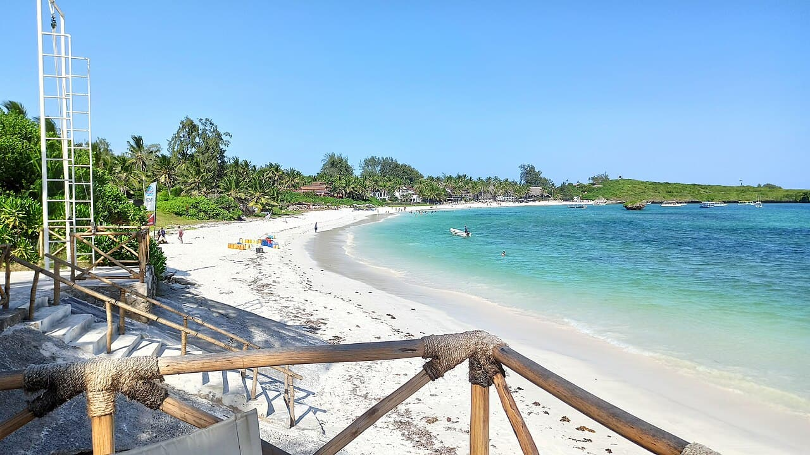

Watamu
Kenya · snorkeling, kitesurf, baignade, paddle

Un parc marin national protégé depuis les années 1960 : lagon peu profond, patates de corail et tortues qui viennent pondre sur la plage.
- Lieu
- Kenya
- Niveau
- Débutant
- Activités
- snorkeling, kitesurf, baignade, paddle
- Type d'eau
- Mer / océan
- Coordonnées
- -3.36, 40.02 (position approximative du secteur)
Dangers à connaître
- Courants forts dans les passes du récif à marée descendante.
- Soleil équatorial, insolation rapide.
- Parc marin : ne prélève rien, ne touche pas le corail.
Le conseil d'Ocean Buddy
Reste dans le lagon à marée basse : les passes se vident très vite.
Ouvrir dans Ocean Buddy Télécharger sur l'App Store
Source : Description historique Ocean Buddy · vérification externe en attente.